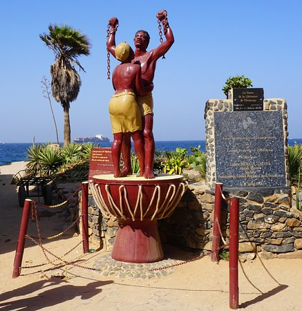

BIENVENU AU ILE DE GOREE
the-liberation-monument

La Statue.... Sur l'île mémoire, patrimoine mondiale, vous découvrirez cette sculpture créée par les frères sculpteurs guadeloupéens Jean et Christian Moisa, qui rend hommage aux victimes de l'esclavage. Elle représente un couple d'esclaves enlacés aux chaînes brisées, les mains levées vers le ciel. Un bel hommage !

L'île de Gorée, ou simplement Gorée, est à la fois une île de l'océan Atlantique nord située dans la baie de Dakar et l'une des 19 communes d'arrondissement de la capitale du Sénégal. C'est un lieu symbole de la mémoire de la traite négrière en Afrique, reconnu officiellement par l’Organisation des Nations unies (ONU) en 1978 : Gorée, « île-mémoire » de cette tragédie, fut ainsi l’un des tout premiers lieux à être portés sur la liste du patrimoine mondial gérée par l'Organisation des Nations unies pour l'éducation, la science et la culture (UNESCO)